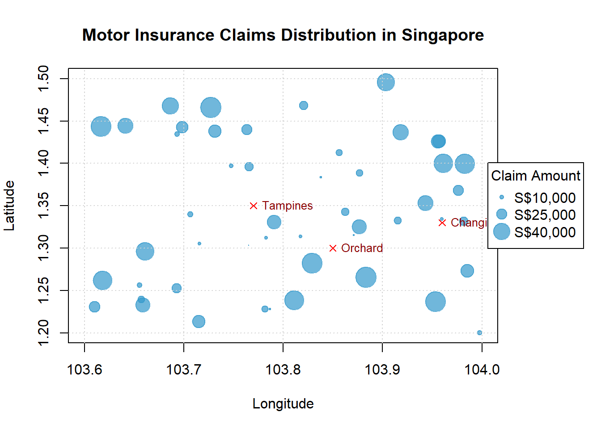

Data Visualization: Insurance Claims Analysis Dashboard
Data Visualization: Insurance Claims Analysis Dashboard
The Story Behind This Visualization
Context: During my Financial Business Informatics diploma at Temasek Polytechnic (Year 3, Semester 2), I undertook a Capstone Project with a major Singaporean insurer. The project aimed to analyze 3 years of motor insurance claims data to identify patterns and optimize premium pricing strategies.
Course: FIN3201 - Business Intelligence & Analytics
Duration: 4-month industry project
Team: 3 students + 2 industry mentors
Dataset: 45,000+ motor insurance claims (2019-2021) worth SGD 120+ million
The Challenge: The insurer’s pricing team relied on static Excel reports that showed basic aggregates (total claims, average cost) but couldn’t reveal: 1. Temporal patterns (seasonal, weekly, hourly trends) 2. Geographic hotspots for accidents 3. Vehicle-specific risk profiles 4. Correlations between multiple variables
My task was to create an interactive dashboard that transformed raw claims data into actionable insights for their actuarial team.
Visualization Rationale & Design Decisions
Why an Interactive Dashboard?
Traditional static charts (bar, line, pie) failed to show the multi-dimensional relationships in the data. I chose a dashboard approach with linked visualizations because:
- Multi-variable Analysis: Claims data has 15+ dimensions (time, location, vehicle type, driver age, weather, etc.)
- Exploratory Nature: Different stakeholders needed different views (actuaries vs. operations vs. marketing)
- Drill-down Capability: From high-level trends to individual claim details
- Comparative Analysis: Side-by-side comparison of different segments
Chart Selection Rationale
| Chart Type | Purpose | Data Encoded |
|---|---|---|
| Heat Map | Show geographic accident hotspots | Location coordinates, claim frequency, claim severity |
| Time Series Chart | Show temporal patterns | Date/time, claim count, average cost |
| Sunburst Diagram | Hierarchical breakdown | Vehicle type, Make, Model, Age |
| Scatter Plot Matrix | Correlation analysis | 6 key variables simultaneously |
| Parallel Coordinates | Multi-dimensional profiling | 8+ risk factors per claim |